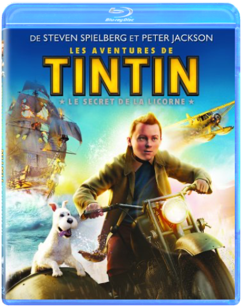

Ours d’or du festival de Berlin et Oscar du meilleur film d’animation ont récompensé cette œuvre magistrale et universelle. Dans un véritable tourbillon d’idées, de couleurs et de sons, le film nous emporte avec l’héroïne à l’écart du monde, dans un établissement de bains pour les Dieux. L’occasion pour Miyazaki de créer un univers merveilleux au sens premier du terme - un assemblage chaotique de lieux et de personnages inattendus et hétérogènes (dont le très émouvant Dieu sans Visage), qui tous ensemble forment un monde cohérent et fonctionnel. Au sein de ce microcosme, Chihiro devra trouver sa place pour s’intégrer, être respectée et ainsi sauver sa vie et celle de ses parents. Tant visuellement que musicalement, Le Voyage de Chihiro est porté par la grâce et la magie d’un auteur qui ne ressemble à aucun autre. Les bonus de cette édition collector, tous de grande qualité, sont regroupés sur le deuxième disque et permettent d’en découvrir davantage sur la galaxie Miyazaki (un documentaire sur Joe Hisaishi, son compositeur attitré, un autre sur La philosophie du studio Ghibli,une visite du Musée Ghibli) et sur la conception du film (making of, comparaison film /story-board…). —www.ecranlarge.com  De son enfance new-yorkaise à son exil anonyme chaperonné par le FBI, le chef-d'oeuvre de Martin Scorsese sorti en 1990 retrace la vie drôle et terrifiante du gangster Henry Hill (Ray Liotta). Le style percutant de Scorcese convient à merveille pour illustrer l'irrésistible ascension de Hill dans les années 50 jusqu'à sa chute 20 ans plus tard. Personne sans doute n'avait jamais aussi bien réussi à montrer les ravages de la cocaïne sur le cerveau d'un individu. Comme souvent chez Scorsese, la bande originale revêt une grande importance. Non seulement les chansons servent à situer les scènes dans leur époque mais elles illustrent intelligemment les différents climats du film. Sans jamais lui ressembler, Les Affranchis est largement aussi réussi que Le Parrain. La composition ahurissante de Joe Pesci en mafieux complètement cinglé en a fait une star, mais chaque rôle secondaire, de Paul Sorvino à Robert De Niro, offre une performance quasiment miraculeuse. — Leonard Maltin  les aventures de tintin : le secret de la licornesteven spielberg Parce qu'il achète la maquette d'un bateau appelé la Licorne, Tintin, un jeune reporter, se retrouve entraîné dans une fantastique aventure à la recherche d'un fabuleux secret. En enquêtant sur une énigme vieille de plusieurs siècles, il contrarie les plans d'Ivan Ivanovitch Sakharine, un homme diabolique convaincu que Tintin a volé un trésor en rapport avec un pirate nommé Rackham le Rouge. Avec l'aide de Milou, son fidèle petit chien blanc, du capitaine Haddock, un vieux loup de mer au mauvais caractère, et de deux policiers maladroits, Dupond et Dupont, Tintin va parcourir la moitié de la planète, et essayer de se montrer plus malin et plus rapide que ses ennemis, tous lancés dans cette course au trésor à la recherche d'une épave engloutie qui semble receler la clé d'une immense fortune... et une redoutable malédiction. De la haute mer aux sables des déserts d'Afrique, Tintin et ses amis vont affronter mille obstacles, risquer leur vie, et prouver que quand on est prêt à prendre tous les risques, rien ne peut vous arrêter... |  Le principal atout des Poupées russes est d’être un film autonome qui dissimule avec finesse des clins d’œil aux fans du premier opus. S’agit-il dès lors ici d’une véritable suite ? Oui, mais une suite intelligente où Klapisch se fait le témoin privilégié de son personnage fétiche en pleine crise d’« adulescence ». Xavier doit ici faire face à sa vie et aux poupées croisées sur son chemin (casting divers et charmant, dont la drôlissime Cécile de France). Il serait pourtant malvenu d’enfermer Les poupées russes dans le registre de la comédie : plus riche, mieux maîtrisé, le film devrait encore mieux vieillir que son aîné. En attendant des retrouvailles dans quelques années…à Rome, puisque tous les chemins y mènent ! On peut croire à un troisième opus tant les suppléments nous montrent à quel point tout le monde semble prendre plaisir à ces retrouvailles. Heureusement que le making-of est là pour rappeler que Les Poupées russes est d’abord un film au-delà d’une réunion d’anciens élèves avec, cependant, ce terrible aveu : au premier jour du tournage le scénario n’était pas écrit ! Résultat : des méthodes de tournage assez aléatoires et pas moins d’une heure vingt (intéressante et commentée) de scènes coupées ! www.ecranlarge.com madagascar 3 : bons baisers d'europeeric darnell De retour d'Afrique, où leur dernière aventure les avait menés, Alex et ses fidèles amis Marty, Gloria et Melman aspirent désormais à rentrer chez eux, à New York, et à retrouver le cadre familier du zoo de Central Park. Autant dire qu'ils sont prêts à tout pour y parvenir ! Alors que King Julian, Maurice et les Pingouins se joignent à eux, leur nouvelle expédition rocambolesque les conduit en Europe où ils trouvent la couverture idéale : un cirque ambulant dont ils deviennent les héros... |

Julien
Collection Total:
2 025 Items
2 025 Items
Last Updated:
Dec 25, 2023
Dec 25, 2023


 Made with Delicious Library
Made with Delicious Library